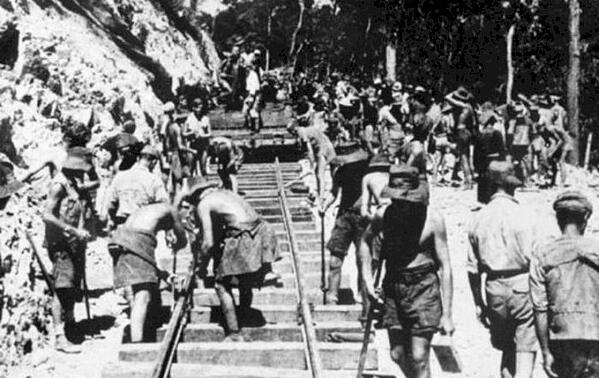
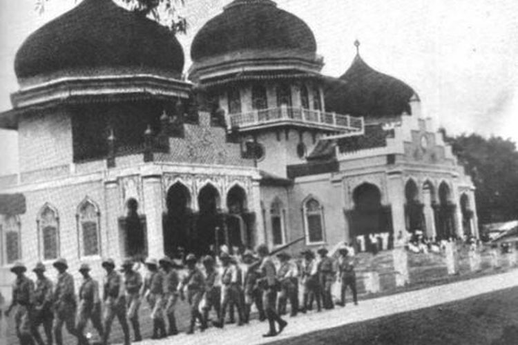
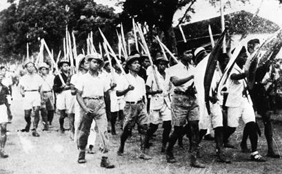
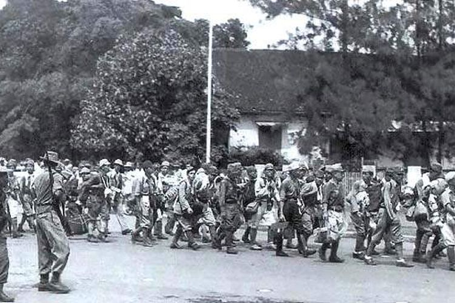
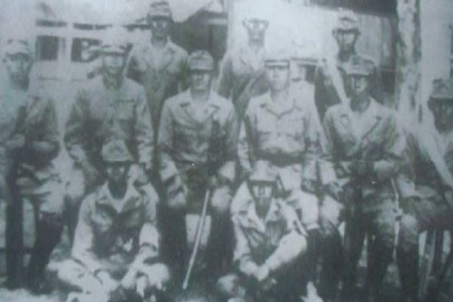

Keberhasilan Jepang menguasai beberapa wilayah Indonesia, merupakan akibat dari propaganda-propaganda yang dilakukan oleh Jepang terhadap bangsa Indonesia, tujuannya adalah menarik simpati sehingga rakyat tidak melakukan perlawanan.
Banyak masyarakat yang menderita saat wilayahnya dikuasai oleh Jepang. Hal ini dikarenakan, mereka dipaksa untuk membuat parit, jalan, lapangan terbang, dan juga dipaksa oleh Jepang untuk menjadi Romusha. Kalian tahu nggak apa itu romusha? Romusha adalah sebutan untuk orang-orang yang dipekerjakan sebagai buruh secara paksa oleh Jepang ketika menduduki Indonesia.
Tapi apakah masyarakat kita diam saja? Tentu saja tidak. Bangsa kita kemudian mencoba untuk membuat berbagai siasat untuk melakukan perlawanan terhadap Jepang. Masyarakat kita saat itu tidak dijadikan sebagai Romusha. Nah, mulailah bangsa kita dengan strateginya melalui organisasi-organisasi yang dibentuk oleh Jepang, dan juga melalui gerakan-gerakan bawah tanah. Bentuk perlawanan rakyat Indonesia yang berbeda dilakukan oleh bangsa kita, akan tetapi tujuan dan cita-cita perjuangan mereka tetaplah sama, mencapai kemerdekaan Indonesia.
Beberapa wilayah yang dikuasai oleh Jepang dan mendapat perlawanan dari rakyat Indonesia diantaranya:
Aceh menjadi salah satu wilayah yang dikuasai Jepang. Masyarakat Aceh diperlakukan dengan sewenang-wenang dan mengalami penderitaan yang cukup lama karena banyak rakyat Aceh yang dikerahkan untuk Romusha. Akibat hal itu, pada 10 November 1942 terjadi penyerangan terhadap Jepang di Cot Plieng, penyerangan tersebut dipimpin oleh Tengku Abdul Jalil yang merupakan seorang guru mengaji di Cot Plieng.
Sebanyak dua kali Jepang berusaha menaklukan wilayah Cot Plieng, dua-duanya pun berhasil digagalkan oleh rakyat Aceh dengan serangannya, dan berhasil memukul mundur Jepang ke daerah Lhokseumawe. Kemudian pada serangan ketiga, Jepang berhasil merebut Cot Plieng, dan Tengku Abdul Jalil harus gugur di tempat saat sedang beribadah.
Singaparna, Tasikmalaya, menjadi salah satu wilayah yang berhasil di duduki oleh Jepang. Pada masa itu, rakyat Singaparna dipaksa untuk mengikuti upacara Seikerei. Upacara Seikerei merupakan upacara penghormatan kepada kaisar Jepang dengan cara membungkuk kearah matahari terbit. Dengan cara seperti ini, masyarakat Singaparna merasa sangat dipermalukan dan dilecehkan.
Selain itu, mereka juga merasa menderita karena diperlakukan secara sewenang-wenang dan kasar oleh Jepang. Akibatnya, pada bulan Februari 1944, rakyat Singaparna melakukan perlawanan terhadap Jepang. Pasukan perlawanan dipimpin oleh Kiai Zainal Mustofa. Akan tetapi Jepang berhasil menangkap Kiai Zainal Mustofa pada tanggal 25 Februari 1944, dan pada tanggal 25 Oktober 1944, Kiai Zainal harus menghentikan perjuangannya setelah beliau dihukum mati.
Indramayu mendapatkan perlakuan yang sama oleh Jepang, masyarakat Indramayu dipaksa menjadi romusha, bekerja di bawah tekanan dan diperlakukan secara sewenang-wenang. Oleh karena itu, masyarakat Indramayu juga melakukan perlawanan terhadap Jepang. Pemberontakan tersebut terjadi di Desa Kaplongan pada bulan April 1944. Selanjutnya beberapa bulan kemudian, tepatnya tanggal 30 Juli 1944 terjadi pemberontakan di Desa Cidempet, Kecamatan Loh Bener.
Perlawanan juga terjadi di Blitar. Pada tanggal 14 Februari 1945 terjadi pemberontakan yang dilakukan para tentara PETA (Pembela Tanah Air) di bawah pimpinan Supriyadi. Pemberontakan ini merupakan pemberontakan terbesar pada masa pendudukan Jepang.
